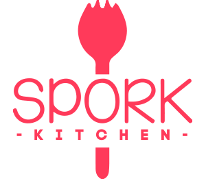

Welcome to 
We are a collaborative working and food preparation space

We are a collaborative working and food preparation space
SPORK KITCHEN is created to connect local food entrepreneurs who share a future vision where our children have abundant access to good food, a solid understanding of their own nutrition, and trust in what they eat. We believe that childhood nutrition and other foodrelated issues facing our children can be tackled collectively through collaborative efforts across our community. Together, we can combat childhood nutrition issues in the US, particularly for children who have been impacted by social, racial, and economic inequality.
SPORK KITCHEN locations serve as hubs designed to help improve the health of their communities and local food systems from ingredient sourcing and recipe development to food preparation and distribution.
We love working with mission driven food based businesses, startups, and entrepreneurs who seek to improve childhood nutrition.
SPORK KITCHEN provides essential resources to food entrepreneurs in order to get their ideas off the ground. We offer flexible working spaces, utilities, supplies, and expertise.
Our flagship SPORK KITCHEN is strategically positioned in Anacostia, D.C. and serves the greater communities in D.C. area, including Virginia, Delaware and Maryland.
Anacostia is a traditional low income bluecollar community with very limited access to healthy food options.
Surrounding states including Virginia and Delaware have the highest obesity and overweight rates for WIC (women, infant, children) and adolescents, according to data by Center of Disease Control.
Number of public schools in the greater D.C area.
Artistic, youth and uplifting culture in the Anacostia community.
Effort to improve many areas of social services and education.
Anacostia’s recent sustainability efforts include the development of the largest hydroponic greenhouse in the district for farming purpose.
Food, nutrition and health focused organizations such as USDA, CDC are centrally located in Washington D.C.
While SPORK is expanding its business, we welcome everyone to help us identify the next possible SPORK KITCHEN location. Please submit a location proposal to hello@spork-kitchen.com
Please keep in mind that knowledge and intellectual resources can be shared easily online, and teams are sometimes moveable. We are primarily targeting at communities impacted by social, racial, and economic inequality with severe foodbased nutrition problems and have the strong need for change.
SPORK KITCHEN teamed up with Dorchester Bay EDC to redevelop the long-vacant, former Pearl Meat Factory into a multitenant food production small business center. The facility offers a mix of shared-use and dedicated kitchen spaces, plus office and meeting spaces to meet the needs of a wide range of wholesale and retail food companies.
Interested in launching your food business with SPORK KITCHEN? Hover over our offerings.
SPORK KITCHEN is operated by a professional team of 5 SPORK employees with following areas of focus:
MANAGER: manage the overall health of the SPORK KITCHEN, including finance, ROI, contracts, partnerships, policies and training etc.
SOURCING: the purchase of machines, kitchen supplies, fresh food and ingredients.
LOGISTICS: the transportation, storage and distribution of finished product.
COMMUNITY LIAISON: actively seeking local talents, resources, farmers, investors and partners etc.
MARKETING AND ANALYTICS: actively capture and reflect SPORK KITCHEN efforts and updates. Maintain the digital presence and interactions on social media.
(202) 6476656
hello@spork-kitchen.com
1919 14th St. Washington, DC 20020-4867